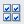

Select Scan/Import in the Navigation Mode screen and click Memory Card, or click Memory Card in the Scan/Import window to open the Memory Card screen (Scan/Import window).
Open this window when you want to import images (including PDF files created via scanning using the Operation Panel) saved on a memory card.
(1) Settings and Operation Buttons
(2) Toolbar
(3) Thumbnail Window
 (View & Use)
(View & Use)
Click this when you want to open images and PDF files saved on your computer. The View & Use window opens.
Auto Scan
Click this when you want to scan documents by automatically detecting the document type, etc. The screen for scanning with Auto Scan appears.
Photos/Documents (Platen)
Click this when you want to scan photos, documents, magazines, and other printed materials. The screen for scanning photos and documents appears.
Stack of Documents (ADF)
Click this when you want to scan multiple documents at one time from the ADF (Auto Document Feeder). The screen for scanning from the ADF appears.
Memory Card
Displays folders of images and PDF files (grouped by year, month/year and month/date/year) on a memory card in tree view. Select a folder to display its contents in the Thumbnail window to the right.
File date is the captured or updated date.
Import
Imports the selected images and open them in the View & Use window.
Jump to Main Menu
Jumps to the Main Menu.
Preferences
The Preferences dialog opens. In the Preferences dialog, you can make advanced settings to MP Navigator EX functions.
 (Guide)
(Guide)
Opens this guide.
Edit Tools
 (Select All)
Selects all images in the Thumbnail window.
 (Cancel All)
(Cancel All)
Cancels all image selections in the Thumbnail window.
 Zoom in
Zoom in
Enlarges the target image (outlined in orange). You can also enlarge the image by double-clicking it. You can check all pages when you select a PDF file.
(Refresh)
Refreshes the Thumbnail window contents.
 (Display Size)
(Display Size)
Changes the size of images in the Thumbnail window.
 (Sort by)
(Sort by)
Sorts the images in the Thumbnail window by date (ascending or descending).
Thumbnail Window
Images saved on the memory card are displayed by year or month/year.
When you select the checkbox of an image, the image appears in the Selected Images area.
(Cancel All)
Cancels the selection of all images in the Selected Images area.
(Cancel Selection)
Cancels the selection of the target image (outlined in orange) in the Selected Images area.
Selected Images Area
Images selected in the Thumbnail window are displayed.